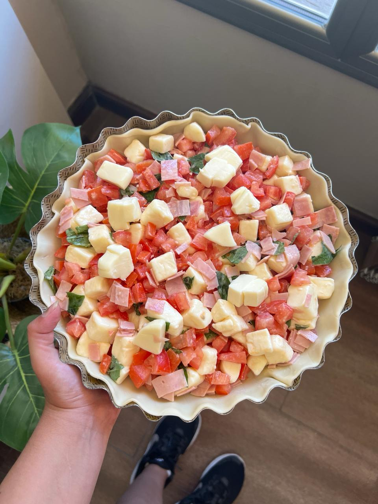
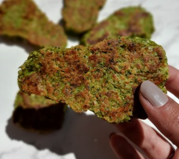

Tarta Caprese

INGREDIENTES
- Tomate en cubos
- Queso cremoso en cubos
- Albahaca picada
- 1 Huevo
- Mix de semillas (en este caso utilize un mix de girasol, sesamo integral y lino)
PROCEDIMIENTO
- Juntas tomate y queso cremoso en cubos.
- Agregas albahaca picada.
- Armas tu tarta, pincelas arriba con huevito ligado.
- Espolvoreas mix de semillas.
Pionono Casero
INGREDIENTES PARA LA MASA
- 4 Huevos
- 3 cdas. de azucar (si les gusta agridulce como el tradicional)
- 4 cdas. de harina (la que quieran, puede ser comun, integral, de arroz, etc.)
- 1 cdita. de sal
INGREDIENTES PARA LA MAYONESA CASERA
- 2 Huevos
- 175 cc de aceite
- Jugo de 1 limón
- Sal a gusto
INGREDIENTES PARA EL RELLENO
- Lo que más les guste!! Yo usé atún, choclo, zanahoria rallada y la mayonesa casera todo mezclado.
PROCEDIMIENTO
- Preparan la masa del pionono batiendo 4 huevos con el azúcar y sal, tiene que quedar cremoso.
- Agregan la harina tamizada en movimientos envolventes y luego vuelcan la preparación en una fuente rectangular antiadherente o sobre papel manteca.
- Llevan a horno precalentado por unos 20 minutos a 180°.
- Mientras se cocina el pionono, ponen a hervir los 2 huevos para la preparación de la mayonesa.
- En un recipiente colocar los 175 cc de aceite, los 2 huevos hervidos, el jugo del limón y la sal. (Lo ideal es que lo preparen con miniprimer o licuadora).
- ATENTOS!!! Para que la mayonesa no se corte, deben sostener la miniprimer quieta en el fondo y que licúe sola, desde abajo para arriba hasta llegar a la consistencia deseada, cremosa. Luego dejar reposar hasta que baje la temperatura.
- Cuando el pionono esté cocido, despegarlo suavemente del molde para que no se rompa. Y dejar enfriar más.
- Ahora el relleno!! Mezclan el atún, el choclo y la zanahoria con parte de la mayonesa.
- Luego van enrollando de a poco el pionono y por último decorarlo!! Yo lo decoré con la otra parte de la mayonesa, rodajas de aceitunas, verdeo picado y rodajas de tomate.
Croqueta De Brócoli

INGREDIENTES
- Brocoli
- 1/2 Cebolla
- 4 cdas. aproximadamente de pan rallado o harina de garbanzos
- 4 cdas. aproximadamente de queso rallado
- 1 huevo
- Especias
PROCEDIMIENTO
- Primero cortar el tallo de la cabeza de brocoli. Lo lavan bien con un colador.
- Luego ponen todas las cabecitas a hervir hasta que esté tierno.
- Pican la cebolla y el brocoli (o meter todo en procesadora) y agregan el huevo, el pan y queso rallado y las especias.
- Una vez que esté todo unido, empiezan a armar las croquetas. Si ven que le falta más consistencia, le pueden agregar más pan rallado o queso. Yo le di forma de nuggets.
- Rocían una fuente con un poco de aceite y envían todo a horno a 190° hasta que esté crocantito.